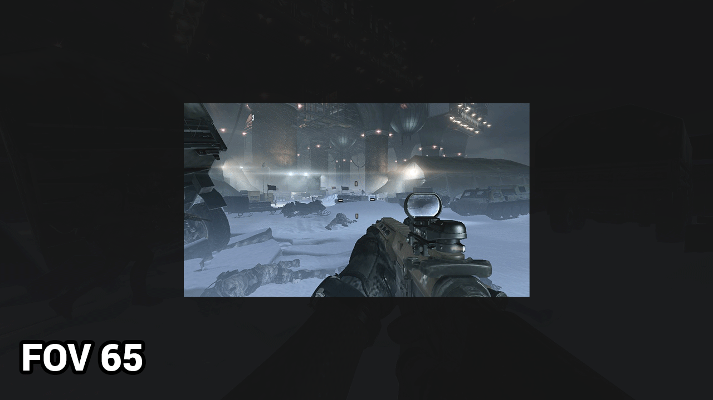

Welcome
Welcome to my website, dedicated to what I am truly passionate about, PC gaming. I have been a member of the PC Master Race since 7th grade, after I recived my first laptop for "school". Playing games with my friends is my favorite past time, and I want to pass my knowlege, savings, and joy onto you.
Why PC?
PC's are the best platform in the world. The new Xbox and Playstation simply cannnot compete anymore. They stagnate the market with terrible over piced games and change you money to play with your friends. Sure, a console may cost $300, but how much will you spend paying for Xbox live and other games? The same can be said for playstaion. While high end PC's may cost $800 or more, you can buy a PC that will outclass any console for as little as $400. Any limitations or restrictions holding PC's back are entirely artificial and fabricated by console manufacturers to prolong their relevance and profit. Long has the PC industry delt with such lies, and it is time to bury them ones and for all.
The Console Industry.
In years past, a console was the best place to play games. Times have changed. The modern console industry holds you favorite games prisoner, and charges you insane ammounts of money to access them. And then they make you pay more for a season pass? And EVEN MORE for online play? They are milking the market dry.
Thats not even the worst part. Their "high tech machines" can barely run the games they have. All modern consoles run games at 24-30 fps, while the human eye can clearly see over 60 fps. They also cut the field of view that players can see, which limits the games asthetic look and immersion.
Fps, PC vs Console

Fov, PC vs Console

Fov Direct Comparison 65 vs 100
